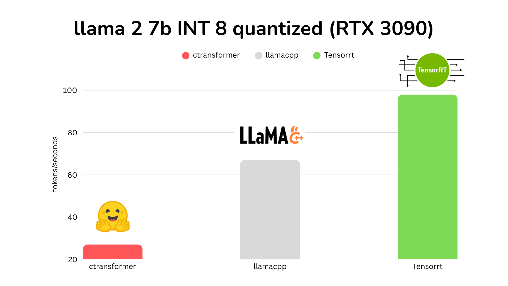
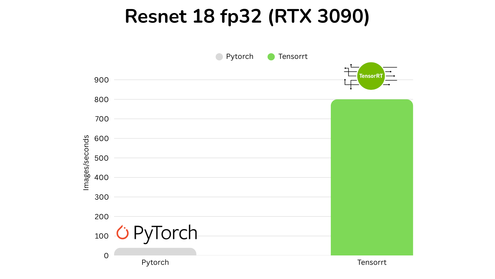
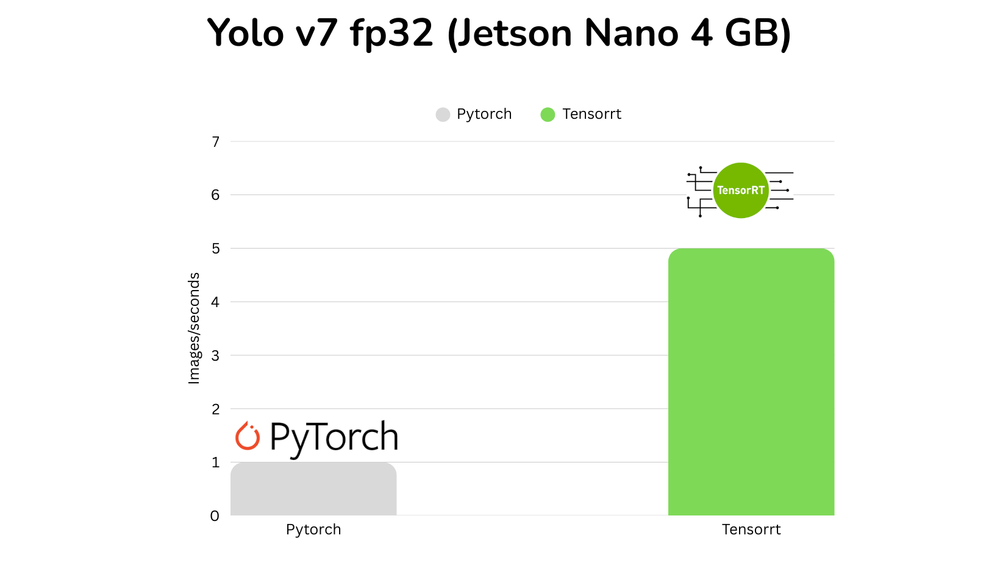

NVIDIA TensorRT is a deep-learning inference library that optimizes trained neural networks for high-performance deployment on NVIDIA GPUs. Whether you are deploying on a PC or an edge device such as NVIDIA Jetson, TensorRT can significantly improve inference speed and efficiency.
Why TensorRT?
TensorRT optimizes models through layer fusion, precision calibration from FP32 to FP16 or INT8, kernel auto-tuning, and dynamic tensor-memory management. The result is faster inference, lower latency, and a smaller memory footprint for real-time robotics, autonomous systems, and edge applications.
Prerequisites
Hardware
- For PC: a system with an NVIDIA GPU, such as an RTX 3080.
- For Jetson: a Jetson Nano, TX1/TX2, Xavier NX, Orin, or a similar device.
Software
- An NVIDIA driver and CUDA toolkit compatible with your TensorRT version.
- TensorRT, installed directly or provided through JetPack.
- Python 3.8 or newer with
numpy,onnx, andpycuda. - A trained PyTorch or TensorFlow model converted to ONNX format.
Step 1: Prepare the model
TensorRT works with models in ONNX or Caffe format. ONNX is commonly used because it is framework-agnostic. The following example exports a pretrained ResNet-18 model from PyTorch.
import torch
import torchvision.models as models
# Load the pretrained model
model = models.resnet18(pretrained=True)
model.eval()
dummy_input = torch.randn(1, 3, 224, 224)
torch.onnx.export(
model,
dummy_input,
"resnet18.onnx",
input_names=["input"],
output_names=["output"],
dynamic_axes={
"input": {0: "batch_size"},
"output": {0: "batch_size"},
},
)Step 2: Install TensorRT
On a PC
The simplest route is the Python wheel. Create a virtual environment with Python 3.8–3.11, then install TensorRT and PyCUDA.
conda create -n trt_env python==3.10
conda activate trt_env
python3 -m pip install --upgrade pip
python3 -m pip install wheel
python3 -m pip install --upgrade tensorrt pycudaOn Jetson
Jetson devices include TensorRT as part of JetPack. After flashing the device with a compatible JetPack release, verify the installation:
dpkg -l | grep tensorrt
pip3 show tensorrtStep 3: Build an optimized engine
TensorRT converts the ONNX model into an engine tailored to the target GPU. Clone the inference repository and install its dependencies:
git clone https://github.com/ali-rehman-ML/trt_inference.git
cd trt_inference
pip install -r requirements.txt
pip install .Then build the engine from the exported ONNX model:
from trt_inference import EngineBuilder
builder = EngineBuilder(verbose=True, workspace=16)
builder.create_network("resnet18.onnx")
builder.create_engine("resnet18.trt", precision="fp32")The supporting code is available in the TensorRT inference repository.
Step 4: Deploy the model
With the engine built, create an inference session and pass a batch of input tensors:
import numpy as np
from trt_inference import TRTInference
trt_inference = TRTInference("resnet18.trt", max_batch_size=32)
input_data = np.random.randn(4, 3, 224, 224).astype(np.float32)
outputs = trt_inference.infer(input_data)
print(f"Output shapes: {[output.shape for output in outputs]}")Performance evaluation
TensorRT delivers substantial speedups across NVIDIA hardware. FP16 precision commonly reduces latency with little accuracy loss, while INT8 can improve throughput further when the workload and calibration data support it.


